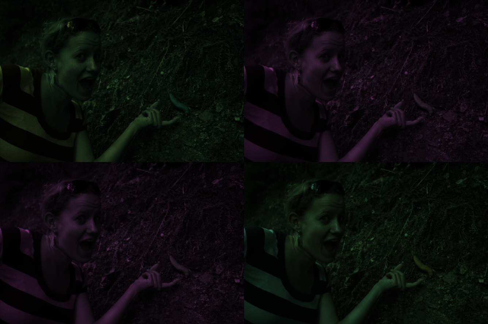
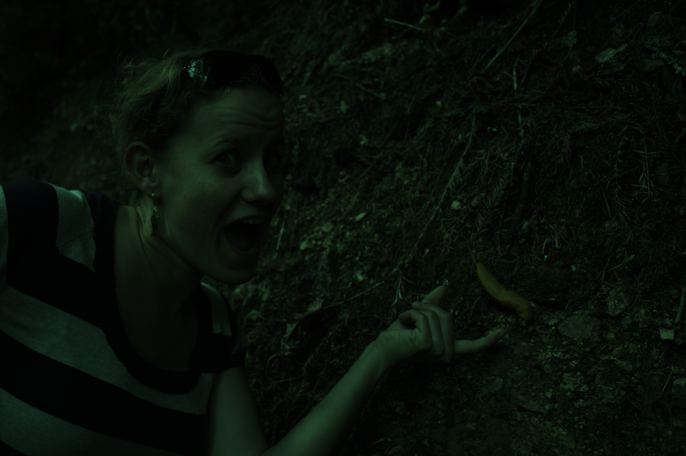
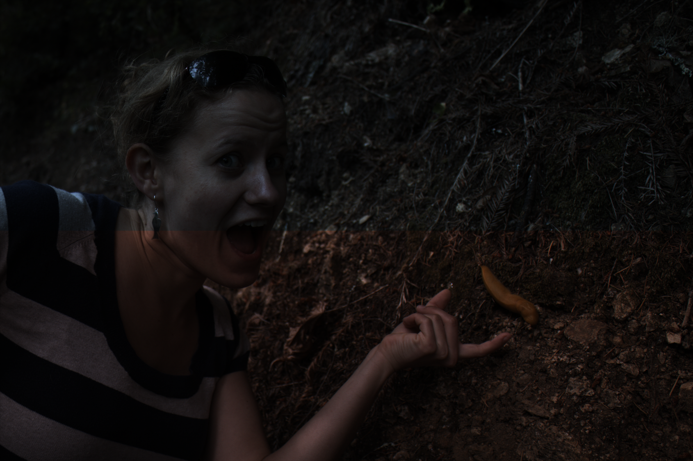
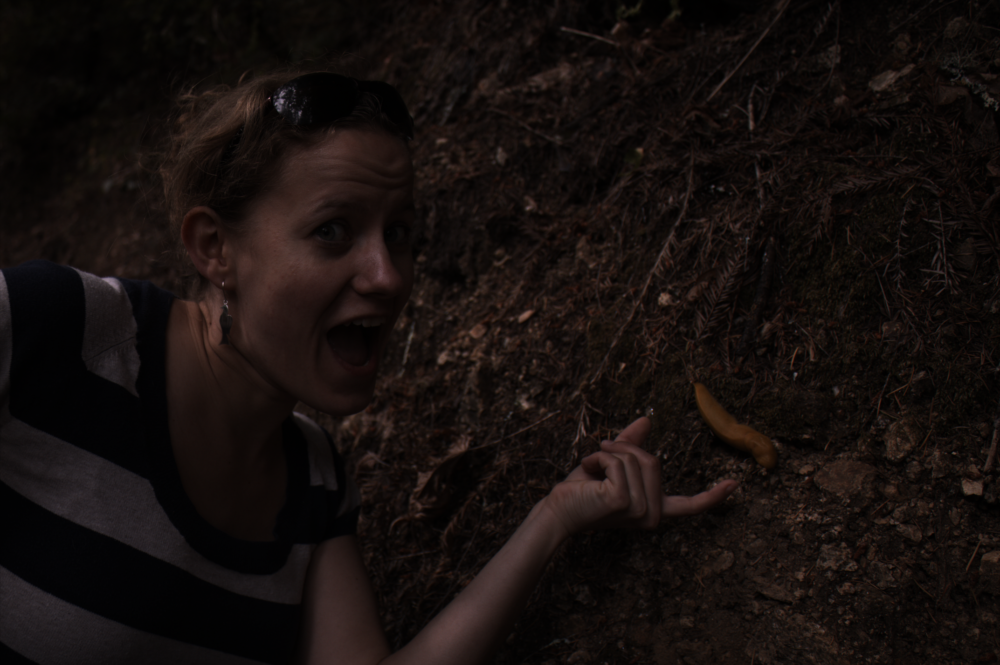
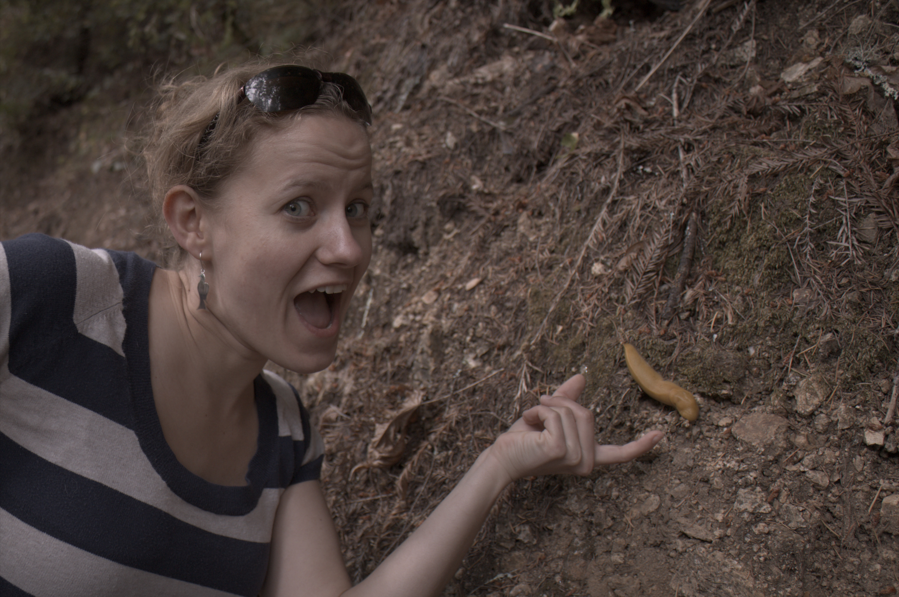
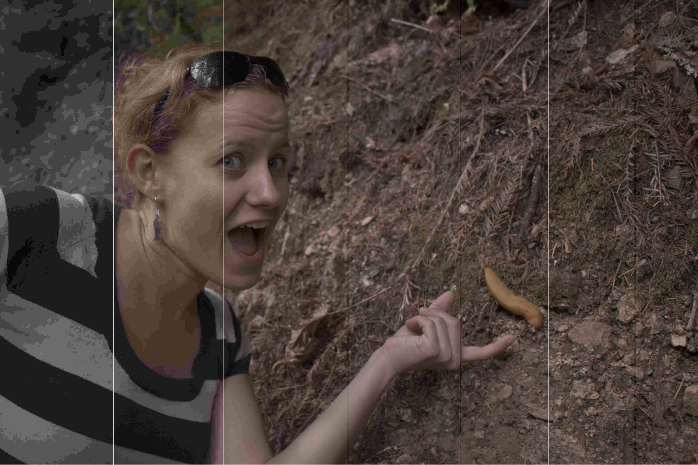

IIT6028 HA#1 Computational Photography
TOPIC IMPLEMENT A BASIC IMAGE PROCESSING PIPELINE

1. INITIALS
original tiff image

2. LINEARIZATION
after linearization

3. IDENTIFYING THE CORRECT BAYER PATTERN
left-top: bggr / right-top: gbrg / left-bottom: grbg / right-bottom: rggb(best)

3. IDENTIFYING THE CORRECT BAYER PATTERN
results of rggb(best)

4. WHITE BALANCING
top: gray world / bottom: white world(best)

4. WHITE BALANCING
results of white world automatic white balancing(best)
5. DEMOSAICING
used results of white world AWB

6. BRIGHTNESS ADJUSTMENT AND GAMMA CORRECTION
used results of white world AWB / .PNG(no compression)

7. COMPRESSION
.JPEG, quality setting 95(compression)

7. COMPRESSION
left-to-right, quality setting of JPEG 5-10-15-20-30-50-95
Previous
Next
1. INITIALS load, check, and convert into a double-precision array
bits per integer? 16 bits - uint16
width? 4290
height? 2856
Print them using fprintf function.
2. LINEARIZATION shift and scale, within the range [0, 1]
Linear transform mapped.
3. IDENTIFYING THE CORRECT BAYER PATTERN identify Bayer patterns
version? rggb
reason?
I checked all results image of four possible red-green-blue patterns.
Result of rggb is best representor of original image.
And also, I calculated sum of differences between pixels, and I figured out difference betweeen img_2 and img_3 is smallest.
It means img_2 and img_3 represents same color, so Bayer pattern of this camera is rggb.
Calculate img1, img2, img3, img4. And generate test images with cat function
4. WHITE BALANCING white world and gray world automatic white balancing
best? white world automatic white balancing
Implemented two functions: white_balancing_grey and white_balancing_white.
5. DEMOSAICING use bilinear interpolation
Just use interp2 function.
6. BRIGHTNESS ADJUSTMENT AND GAMMA CORRECTION apply non-linear gamma correction
Implement given non-linear function to apply gamma correction.
7. COMPRESSION PNG vs JPEG, and compression ratio
difference between .PNG and .JPEG(quality 95)? honestly, nope
size of the uncompressed file?(.PNG) 14,439,587 bytes
size of the compressed file?(.JPEG, 95) 2,679,370 bytes
compression ratio? 2,679,370/14,439,587 = 0.1856
compression ratio of quality 50? 608,555/14,439,587 = 0.0421
compression ratio of quality 30? 452,203/14,439,587 = 0.0313
compression ratio of quality 20? 366,003/14,439,587 = 0.0253
compression ratio of quality 15? 321,151/14,439,587 = 0.0222
compression ratio of quality 10? 273,577/14,439,587 = 0.0189
compression ratio of quality 5? 222,342/14,439,587 = 0.0154
the lowest setting for indistinguishable, compression ratio? quality 20 -> compression ratio 0.0253
Used imwrite function.
You can check full matlab codes in GitHub Repo.
GitHub Repo
Copyright 2018. PJunhyuk. All rights reserved.